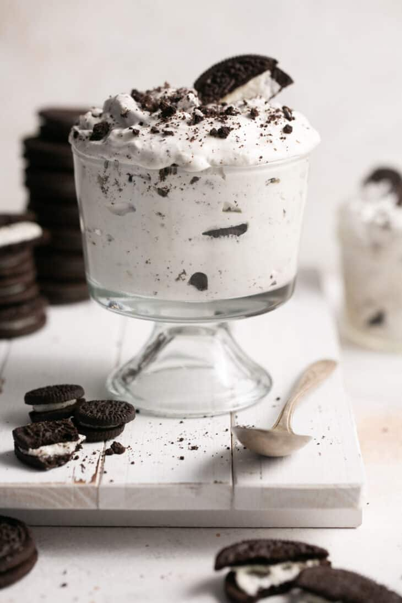

Home
Oreo Cream Fluff

This is one of the best recipes you have got to try. Oreo Cream Fluff is an amazing dessert that will fit any diet whether you are bulking up for a show or slimming down for your health, you can achieve those goals with this! You get oreo and cream in each bite, its so simple!
--Ingredients--
--Directions--
- First, Mix together all the ingredients (except the Oreos) in a large bowl with a spatula or hand mixer until combined. Then fold in the crushed Oreos.
- Second, Refrigerate for at least two hours before enjoying. It gets better the longer it sits in the fridge!
--Calories-- 8 servings
- plain nonfat Greek yogurt - 141 calories
- Great Value Light Whipped Topping - 40 calories
- vanilla protein powder - 130 calories
- sugar-free white chocolate jello pudding mix - 20 calories
- liquid stevia - 0 Calories
- Oreos - 320
- Total - 651 calories or 82 per serving